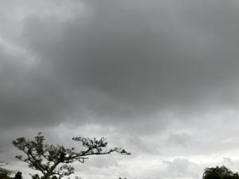
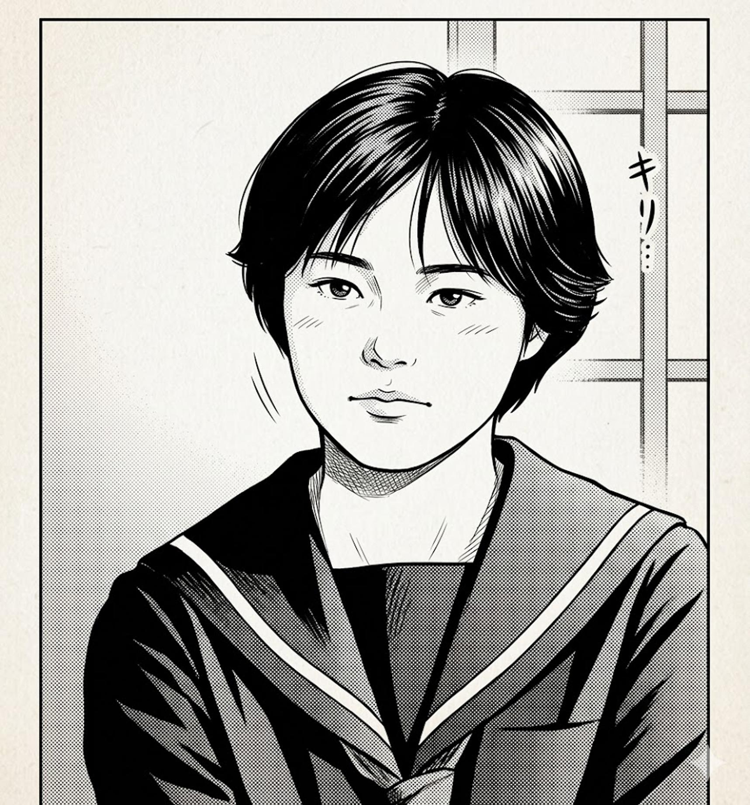

うるがいの話 ある日
最新: 卒業写真【うるがいの話 ある日】とは 一日だけのプログです
『うるがいの話』の最新一日だけのプログで、通信料が少なく経済的だ。カニの画像をクリックすると全ての日付が載る『うるがいの話』サイトを表示します
|
|
【うるがいの話】 うるがい(ｳﾙｶﾞｲ urugai)とは、『もずくがに』の名前でとても大きくなります。 |
|---|---|
|
|
【カミマヤーの話】 猫のことを方言でマヤーといいます。カミマヤー（kamimayaa）とは、神の猫のことです。 |
|
【たながぁの音楽】 たながぁ（ﾀﾅｶﾞｰ tanagaa）とは手長えびのことで、何種類かあり大きいのは車 エビぐらいになります。 |

|
【ぶながぁの話】 ぶながぁ(ﾌﾞﾅｶﾞｰ bunagaa)とは、赤い髪の毛、赤い身体、そして身長は１ｍ２０ｃｍ ぐらい、川の蟹を食べているの目撃された。場所は沖縄県国頭郡大宜味村のと ある村僕の隣近所に住んでいる爺さんから、聞いた話です。 |
|
|
【ギーマの話】 ギーマ(giima)とは、山原の里山に咲くスズランに似た、 花を付けます。実は食べられます、 気が付くと口の周りが紫になっています。 |
2026年04月08日 (水）卒業写真
17:04

お元気ですか
新聞やテレビ（去年見た）で活動してますね
辺士名高校８０周年記念って新聞に載ってました
ところで、私は高校の卒業アルバム、カーちゃんが
シロアリに食べさせたのでありません。
卒業式の私のクラスの写真が
あれば、お手数ですがスマホで撮って
ラインに
貼り付けて頂けないでしょうか。
暇なときに検討、宜しくお願い致します。
３月１日の書き込みです。おととい、動きがありました。
アルバムありました♪
ありがとうら思い出しました、
右下だよー
うん、

複数の人の画像がありました。ジェミニに漫画風に加工してと
お願いしたら、人物が多いのが処理がかかりすぎて、諦めまし
た。で、右下だけ箇所を、漫画風にしてもらいました。ウーン
チョット違う、ケドまいいか。４８年ぶりに会いました。